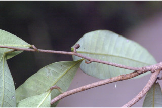
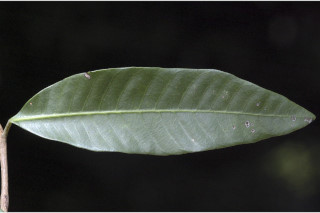
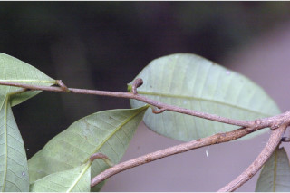
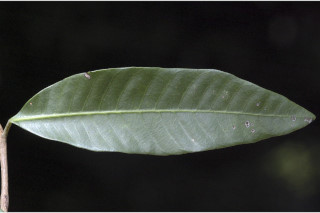

Small trees, up to 15 m tall.
15 ಮೀ ಎತ್ತರದವರೆವಿಗೆ ಬೆಳೆಯುವ ಚಿಕ್ಕಮರಗಳು.
15 മീറ്ററോളം ഉയരത്തില് വളരുന്ന ചെറുമരങ്ങള്.
சிறிய மரம், 15 மீ. உயரம் வரை வளரக்கூடியது.
Bark finely fissured; blaze pinkish brown.
ಕಂದು ಮಿಶ್ರಿತ ನಸುಗೆಂಪು ಕಚ್ಚುಗಳನ್ನೊಳಗೊಂಡ, ಸೂಕ್ಷ್ಮವಾದ ಸೀಳೀಕಾ ಮಾದರಿಯ ತೊಗಟೆಯನ್ನು ಈ ಪ್ರಭೇಧ ಹೊಂದಿರುತ್ತದೆ.
നന്നായി വിണ്ടുകീറിയ പുറംതൊലി; വെട്ട് പാടിന് പിങ്ക് കലര്ന്ന തവിട്ട് നിറം:
மரத்தின் பட்டை மெல்லிய வெடிப்புடையது; உள்பட்டை பிங்க் நிறம்.
Branches glabrous, minutely pubescent when young.
ಎಳೆಕಿರುಕೊಂಬೆಗಳು ಸೂಕ್ಷ್ಮವಾದ ಮೃದು ತುಪ್ಪಳದಿಂದ ಕೂಡಿದ್ದು ಬಲಿತ ಮೇಲೆ ರೋಮರಹಿತವಾಗಿರುತ್ತವೆ.
ശാഖകള് അരോമിലം, ഇളതായിരിക്കുമ്പോള് ചെറുതായി രോമിലമായിരിക്കും.
சிறிய நுனிக்கிளைகள் உரோமங்களற்றது, இளங்கிளைகளில் மெல்லிய உரோமங்கள் காணப்படும்.
Acrid juice scanty.
ಸಸ್ಯ ಕ್ಷೀರವು ಅತಿಖಾರ ಮತ್ತು ಕಹಿವಾಗಿಯೂ ಇರುತ್ತದೆ.
പൊള്ളിക്കുന്ന സ്രവം നന്നേകുറവായിരിക്കും.
சாறு மற்றும் குறைவாக வரும், கொப்பளங்களை உருவாக்க கூடியது.
Leaves simple, alternate, spiral; petiole 0.3-0.5 cm; lamina 4-11.5 x 1-3 cm, elliptic-oblong, apex bluntly acute, base acute, margin entire, coriaceous, glabrous, pale beneath; midrib nearly flat above; secondary_nerves 15-25 pairs, moderate in angle; tertiary_nerves weakly percurrent.
ಎಲೆಗಳು ಸರಳ, ಪರ್ಯಾಯ – ಸುತ್ತು ಜೋಡನಾ ವ್ಯವಸ್ಥೆಯಲ್ಲಿರುತ್ತವೆ; ಎಲೆತೊಟ್ಟು 0.3-0.5 ಸೆಂ.ಮೀ. ಉದ್ದವಾಗಿರುತ್ತದೆ; ಎಲೆ ಪತ್ರ 4 – 11.5 x 1 - 3 ಸೆಂ.ಮೀ ಗಾತ್ರವನ್ನು ಹೊಂದಿದ್ದು, ಅಂಡವೃತ್ತಾಕೃತಿ -ಧೀರ್ಘ ಚತುರಸ್ರಾಕಾರದಲ್ಲಿರುತ್ತದೆ; ಮೊಂಡುಮಿಶ್ರಿತ ಚೂಪಾದ ತುದಿ, ಚೂಪಾದ ಬುಡ, ನಯವಾದ ಅಂಚು, ತೊಗಲಿನಂತಹ ಮೇಲ್ಮೈಯನ್ನು ಪತ್ರಗಳು ಹೊಂದಿದ್ದು ರೋಮರಹಿತವಾಗಿರುತ್ತದೆ; ಮಧ್ಯನಾಳ ಪತ್ರದ ಮೇಲ್ಭಾಗದಲ್ಲಿ ಚಪ್ಪಟೆಯಾಗಿರುತ್ತವೆ; ಎರಡನೇ ದರ್ಜೆ ನಾಳಗಳು 15 ರಿಂದ 25 ಜೋಡಿಗಳಿದ್ದು ಮಿತವಾದ ಕೋನಗಳನ್ನು ಹೊಂದಿರುತ್ತವೆ;ಮೂರನೇ ದರ್ಜೆ ನಾಳಗಳು ದುರ್ಬಲವಾಗಿ ಎಲೆ ದಿಂಡಿಗೆ ಅಡ್ಡವಾಗಿ ಕೂಡುತ್ತವೆ.
ഇലകള് ലഘുവും സര്പ്പിളാകാരത്തില്, ഏകാന്തരക്രമത്തിലാണ് ഇലഞെട്ടിന് 0.3 മുതല് 0.5 സെ.മീ. നീളം; പത്രഫലകത്തിന് 4 മുതല് 11.5 സെ.മീ. വരെ നീളവും 1 മുതല് 3 സെ.മീ. വരെ വീതിയും ദീര്ഘവൃത്തീയ-ആയതാകാരവുമാണ്. മുനപ്പില്ലാത്ത നിശിതാഗ്രത്തോടും നിശിത പത്രാധാരത്തോടും കൂടിയതാണ്; അരികുകള് അവിഭജിതമാണ്, അരോമിലമായതും ചര്മ്മില പ്രകൃതത്തോട് കൂടിയതുമായ ഇതിന്റെ കീഴ്ഭാഗം വിളര്ത്തതാണ്; മുഖ്യസിര മുകളില് ഏതാണ്ട് പരന്നിരിക്കുന്നു; 15 മുതല് 25 ജോഡി ദ്വിതീയ ഞരമ്പുകള്, ഇവ ഇടത്തരം കോണ് തീര്ക്കുന്നു. ത്രിതീയ ഞരമ്പുകള് ലഘുവായി പെര്കറന്റ് ആണ്.
இலைகள் தனித்தவை, மாற்றுஅடுக்கமானவை, சுழல் போன்று அமைந்தவை; இலைக்காம்பு 0.3-0.5 செ.மீ., இலை அலகு 4-11.5 X 1-3 செ.மீ., நீள்வட்டம்-நீள்சதுரம், மழுங்கிய கூரிய நுனி, அலகின் தளம் கூரியது, அலகின் விளிம்பு முழுமையானது, கோரியேசியஸ், கீழ்பரப்பு உரோமங்களற்றது, கீழ்பரப்பு வெளிறிய பச்சை நிறம்; மையநரம்பு மேற்பரப்பில் இலையின் பரப்பிற்கு சமமானது; இரண்டாம் நிலை நரம்புகள் 15-25 ஜோடிகள், மிதமான வளைவுடையது; மூன்றாம் நிலை நரம்புகள் சிறிது பெர்க்கரண்ட்.
Inflorescence in panicle, pubescent; flowers polygamous, sessile.
ಹೂಗಳು ತೊಟ್ಟುರಹಿತ ಹಾಗೂ ಸಂಕೀರ್ಣ ಲಿಂಗಿಗಳಾಗಿದ್ದು,ದಟ್ಟ ಮೃದು ತುಪ್ಪಳವುಳ್ಳ, ಪುನರಾವೃತ್ತಿಯಾಗಿ ಕವಲೊಡೆದ ಅನಿಯತ ಮಧ್ಯಾಭಿಸರ ಪುಷ್ಪಮಂಜರಿಯಲ್ಲಿರುತ್ತವೆ.
പൂങ്കുലകള് രോമിലമായ പാനിക്കുകളാണ്; പൂക്കള് ബഹുലിംഗികളും അവൃന്തവുമാണ്.
மஞ்சரி பேனிக்கிள், உரோமங்களுடையது, மலர்கள் ஒர்பாலானவை மற்றும் இருபாலானவை கலந்தவை (பாலிகேமஸ்), காம்பில்லா மலர்கள்.
Drupe, compressed, 1-seeded
ಕಾಯಿಗಳು ಡ್ರೂಪ್ ಫಲ ಮಾದರಿಯವು ಹಾಗೂ ಸಂಕುಚಿತವಾಗಿದ್ದುಒಂದು ಬೀಜವನ್ನೊಳಗೊಂಡಿರುತ್ತದೆ.
അഭ്രകം പരന്നതും ഒറ്റ വിത്തുള്ളതുമാണ്.
உள்ளோட்டுத்தசைகனி (ட்ரூப்), தட்டையானது, ஒரு விதை கொண்டது.
 


